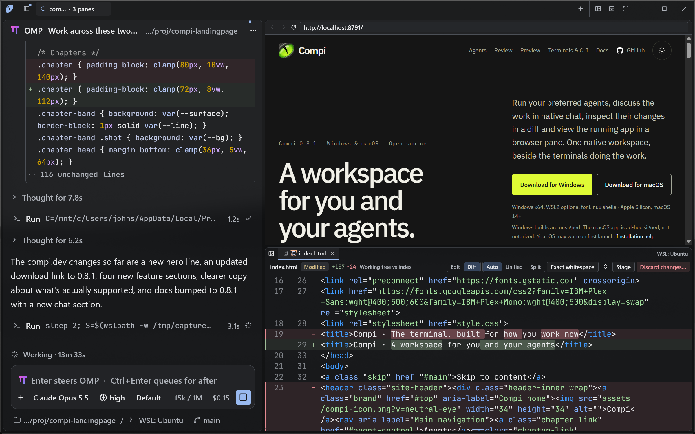
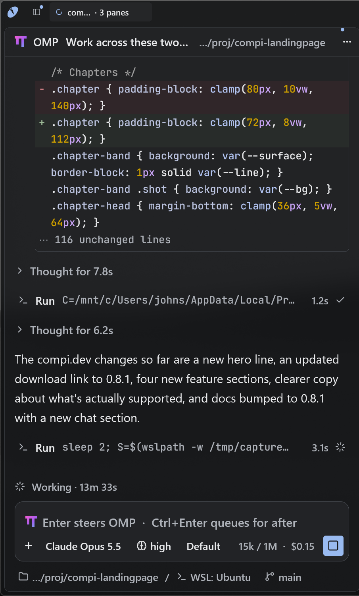
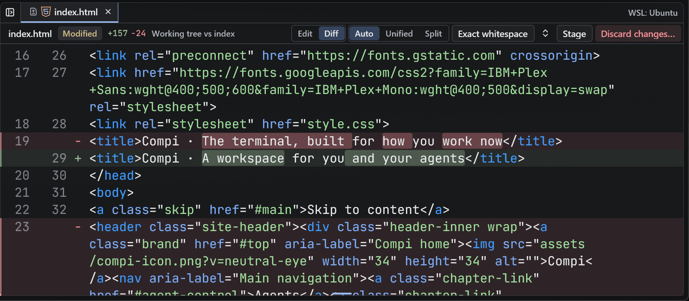
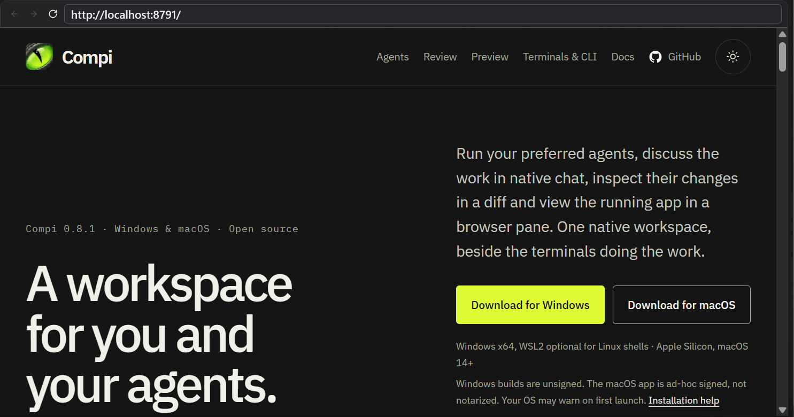

Compi 0.8.1 · Windows & macOS · Open source
A workspace for you and your agents.
Run your preferred agents, discuss the work in native chat, inspect their changes in a diff and view the running app in a browser pane. One native workspace, beside the terminals doing the work.
Windows x64, WSL2 optional for Linux shells · Apple Silicon, macOS 14+
Windows builds are unsigned. The macOS app is ad-hoc signed, not notarized. Your OS may warn on first launch. Installation help

01 / Agents
Bring the agents you already use.

Start Claude Code, Codex, OpenCode or any other terminal agent in a Compi terminal, in your project’s folder, with another terminal beside it for builds and tests.
Native chat, for OMP
compi chat or OMP chat in the palette swaps a terminal for a native conversation with OMP. Each tool call is one line. Permissions and questions arrive as cards. Attach files with @ and screenshots with paste, steer a running turn or queue the next message.
OMP keeps its own models, tools, settings and sessions. Compi supplies the view, and runs the chat in its background server so it keeps going when you close the window.
Native chat supports OMP in 0.8.1. Other agents keep their own terminal interface and work in the same workspace, through the same CLI.
How chat works ↗02 / Review
Read the change, not the summary.

index.html.An agent’s report says what it meant to do. The diff shows what it did. Keep both on screen.
- Changes lists unstaged and staged files with their line counts. Each file flips between Edit and Diff at the same line.
- Stage a file or a single hunk, write the message and commit without leaving the workspace.
compi difflets an agent bring its changes to you;compi diff HEAD~1opens a past commit, read-only.
The diff reads files on disk. Unsaved editor changes are not part of it.
Editing and review ↗03 / Preview
The running app, next to the terminal running it.

compi browse 5173 opens your dev server in a Browser pane beside the terminal. It splits, floats and moves like any other pane.
When a terminal prints a local address, Compi can offer to open it. An empty Browser pane lists the local servers your terminals printed and your recent sites. Pages use the system web view and one persistent profile, so sign-ins stay.
A Browser pane shows the page to you. It does not give an agent DOM access, screenshots or automation; those come from the agent’s own browser tools.
Browser panes ↗04 / Terminals & CLI
Terminals that keep running. One CLI for you and your agents.
Close the window. The work keeps going.
Shells and chats live in Compi’s background server. Reopen Compi and reconnect to the same running processes.
Know when you’re needed.
Programs that report status show when they’re working, waiting on you, done or failed, even in a background tab. Compi can notify you and take you back to that terminal. Watch the notifications demo.
Arrange it around the task.
Tabs, groups, splits and floating panes rearrange without restarting what runs in them, locally or on a Compi server over SSH.
Closing the window keeps processes running. Restarting the server or rebooting ends them, and an update that needs a restart asks first.
- Inspect the workspace
compi --json pane list - Make room
compi split --right - Read another terminal
compi pane capture --scope scrollback - Show the changes
compi diff - Open the app
compi browse 5173
Any agent that can run shell commands can use these. Inside a Compi shell, compi is on PATH and knows its pane; --json returns structured results. Confirmations for closing live work stay in place.
Compi is the workspace, not an agent or an orchestrator. It doesn’t pick your agent or plan its work. CLI reference ↗
Get Compi 0.8.1.
Free and open source under MIT. Updates install from inside the app, with your consent.